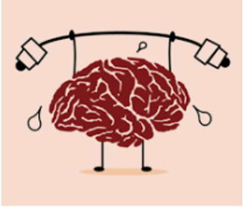

A research report says that only 15% of your financial success is based on your technical knowledge the other 85%
is based upon what they call human engineering.
Etymologically speaking Ergonomics="Ergo"+"nomos" i.e. "work"+"it's rules"!
There are 3 major domains under ergonomics:
Physical ergonomics
Physical ergonomics is concerned with human anatomy, and
some of the anthropometric, physiological and bio mechanical
characteristics as they relate to physical activity. Physical ergonomic principles have been widely used in the design of both consumer and industrial products for optimizing performance and to preventing / treating work-related disorders by reducing the mechanisms behind mechanically induced acute and chronic musculoskeletal injuries.
Organizational ergonomics
Organizational ergonomics is concerned with the optimization of
socio-technical systems, including their organizational structures,
policies and processes.Relevant topics include communication, crew resource management, work design, work systems, design of working times, teamwork, participatory design, etc.
Cognitive ergonomics

It is concerned with mental processes, such as perception, memory,
reasoning and motor response, as they affect interactions among
humans and other elements of a system. Relevant topics include mental workload, decision-making, skilled performance, human reliability, work stress and training as these may relate to human–system and human–computer interaction design.
So, according to you which of the following is the most important type?
There is no right answer to that!
An example which illustrates the importance of physical ergonomics is: Report on construction workers from University of lowa